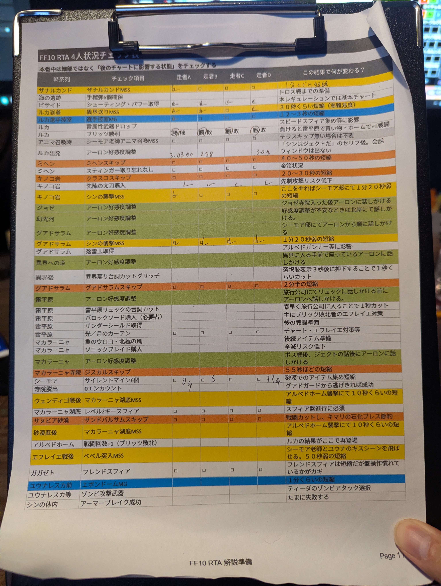

お久しぶりです
気づいたら１月近く空きました。
最近は配信も少な目に１１月２０日から始まったイベントでFF10のRTA解説をすることになったので、その準備をしていました。その解説が少し前に終わったので備忘録？記録としてざっと書いていこうかと思います。
まず解説の話を請け負うきっかけとなったのはFF10RTAのチャートを個人的に日本語訳して自分で使用していたものをとある方に提供したのが始まりでした。その縁あってお誘い頂き、せっかくの機会と思い参加させて頂きました。
その後初めに取り組んだのはチャートの修正でした。なにせ自分用かつ海外勢のチャート翻訳なので独特な言い回しで読みにくい所があったり、自分でわかってるからいいやと間違いの記載をそのままにしていたので目標として誰が読んでもとりあえずクリアできるようになる水準を目指していきました。
初めは「いうてちょちょっと直すだけだろ」と思っていましたが、意外と文章って自分の意図通りに伝えるような内容を書くって滅茶苦茶難しいんだなと痛感しました。自分なりにはチャートを１から読んで大丈夫だろうという水準になったと思いますが、多分至らない所が多いんだろうなと感じています。ただ凝りすぎても本当におわりが見えなくなる感じだったのである程度のところで切り上げ、完成形としました。今後多少の修正は入るかと思いますがそこまでがっつりと手は加えないだろうなあ。
そんなことをしているうちに１０月１日になぜかFF10に何年かぶりのアプデが入っていました。内容としては多少の不具合の修正程度でしたが、それの影響により今までRTAプレイヤーが使っていたMODが全て使えなくなるという大事件となってしまいました。
一旦の応急処置としてsteamの設定でダウングレードし、アプデしないというやり方があるみたいですが、私は動画を観ながらやってもなんかうまくいかなかったのでFF10を弄るのは難しいと数日何もできない状態でした。
この事件を受けて海外主体のFF10のディスコードサーバーでは既に動きがあり、修正パッチの試作が既にされている状態だったため、割と早目に復帰することができました。海外すごい。
チャートが一段落した所で今度は解説の準備です。私自身は解説どころか走者としても、何ならRTAのイベント自体演者側で参加するのは初めてだったので何もわからない状態でした。ですが配信をしていたこともあり、多少は横のつながりがあったので有識者にアドバイスを頂きながら進めることができました。
今回は４人が同時進行で進む内容の為、ストーリーには多くは触れず、RTAに必要な内容とそれによる短縮度、この後どこに注目すればよいかを中心に話そうと決めていたので台本とスキップ技の概要、４人の走者のルートのチェック表を作成しました。

結果ですが全然使わなかったですね。使わなかったというか使えなかった。４人平行で見るところが多すぎで全然情報が追いついていなかったです。使うとすればもっと本当に単純な内容に絞る方が良かったかなと感じました。
と、反省点はありますが自分なりにこれが必要かな？とか考える準備期間はとても楽しかったです。ただこれは予測していたことですが、自分が準備したことが当日ほとんど役に立たなかった。正しく言えば媒体として用意したものはほとんど役に立たなかったですね。ですが無駄だったわけでは無く、資料を作るに当たって自分で吸収した情報を少しでも上手く頭の中で整理出来ていたというか、解説で話す上で身になって話すことは少しは出来ていたのではないかなと感じました。ちなみに媒体で一番役に立ったのは雑談のメモですね。どうしても間が空くときはあるので、そこでスッと話題提供をする内容は準備していて良かったなあと思いました。
それにしても約９時間は長かったですね。解説はヒロシゲさんが骨格となる話をしてくれたおかげで私は結構好きに話しているだけでしたが、それでも疲れました。走者はもっと大変なんだろうな。プレッシャーに弱いので今のところあんまりやりたくないです。と言いつつ今はイベントが終わって落ち着いているのでその考えですが先のことはわからないですね。少なくとも準備含めた全体を通してとてもやりごたえがあり、楽しく取り組むことは出来ました。今回イベントの開催をして頂いた運営さんや現在進行形で参加している走者さん、実況・解説でご一緒させていただいたヒロシゲさん、るぱんさん、いぬがくしんさん、ありがとうございました！！
以上ですいつも以上にまとまってない文章かと思いますが読んでいただきありがとうございました。